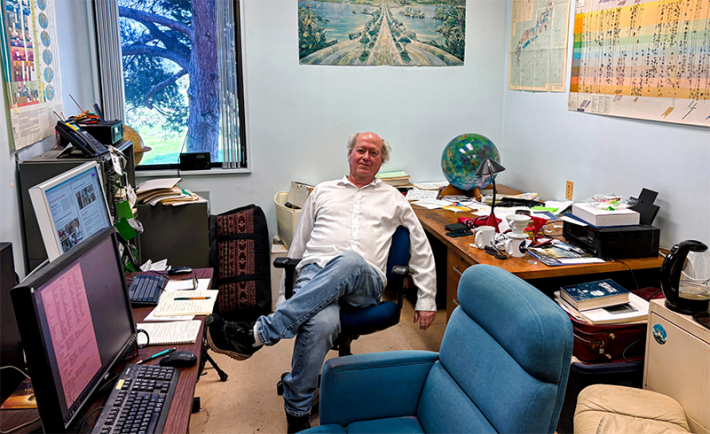
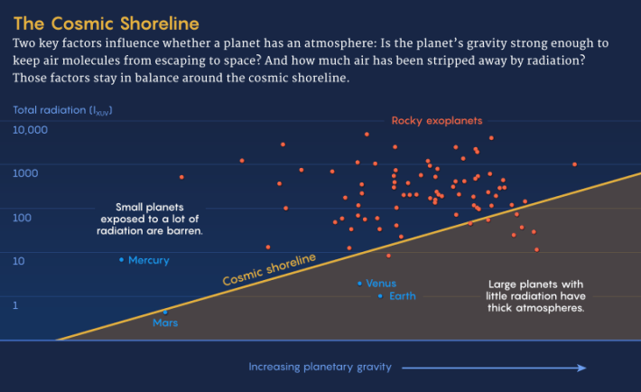
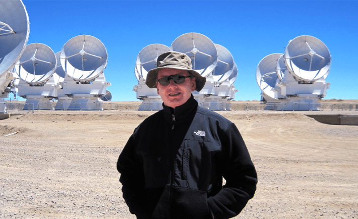

In the late 1970s, Saturn’s odd moon Titan, a hazy orange world, was expecting visitors—first, NASA’s Pioneer 11 probe, then the twin Voyager spacecraft.
Most moons are airless or boast little more than gauzy, gaseous veils. But Titan is cloaked in a blanket of nitrogen and methane so thick that, with a pair of wings and a running start, astronauts on the frosty satellite could fly just by flapping their arms.
A few years after the probes zipped past Titan, Kevin Zahnle, a planetary scientist at NASA’s Ames Research Center, was mulling over the moon’s atmosphere when he found himself asking a deceptively simple question about how planets work: “Why is there air?”
Most scientists thought atmospheres around planets—and the odd moon like Titan—were a question of starting materials. If a growing planet gobbled up enough easily vaporized material, it would have an atmosphere. Otherwise, it wouldn’t. Scientists also knew that atmospheres cling to worlds because of gravity, and that the very smallest worlds lack the heft to hold onto air. But then observations of Mars suggested that, surprisingly, it too had lost substantial amounts of air.
As Zahnle considered the data from across the solar system, he started to wonder if atmospheric loss, rather than starting materials, might determine whether worlds held onto their air. So he plotted dozens of solar system bodies on a simple graph that compared a world’s escape velocity—a measure of its gravity—with the amount of sunlight it receives, as atmospheres wither away in the sun. The plot revealed a neat line separating our solar system’s bare rocks and snowballs from worlds wreathed in gas, a boundary he called the cosmic shoreline. “I was consciously trying to invoke an image that Carl Sagan would have drawn,” he said.
At first, Zahnle’s cosmic shoreline was largely ignored. Escape, he said, was not very popular—scientists mostly focused on how planets got atmospheres, not on how they lost them. But decades later, the discovery of thousands of worlds beyond our solar system has breathed new life—and billion-dollar stakes—into the overlooked idea. The search is on for habitable alien worlds, and eventually for signs of life in their atmospheres. To succeed, alien hunters will need to find planets with air. And the cosmic shoreline, if it truly is cosmic and extends to other star systems, could show them where to start.

COSMIC IMAGINEER: Kevin Zahnle came up with the idea of the cosmic shoreline in the 1980s. “I was consciously trying to invoke an image that Carl Sagan would have drawn.” Photo courtesy of Kevin Zahnle.
Scientists are now using NASA’s James Webb Space Telescope (JWST) to put the concept to the test. The spacecraft has already sniffed for air around rocky planets orbiting a handful of small, cool stars. This spring, it will embark on a massive survey of dozens more rocky worlds.
“It’s just such a compelling question that everyone has, I think, sort of latched on to,” said astrophysicist Kevin Stevenson of the Johns Hopkins University Applied Physics Laboratory.
And, he said, we finally have the technology available to answer it.
How To Lose an Atmosphere
Stripped of its fanciful name, the cosmic shoreline might not seem like a particularly interesting boundary. But planets are enormously complicated, long-lived objects. Simple questions about their evolution run surprisingly deep, and the answers have important implications for habitability, and potentially for life. For Zahnle, the shoreline is a metaphorical borderland. “Planets with thin atmospheres form a kind of beach or cliff between a lifeless, deep ocean of gassy worlds and a dead plateau of airless desert worlds,” he said.
Atmospheres are, by definition, on the outsides of planets. But the air we find around rocky worlds arguably started out as easily vaporized materials on their insides, before the young, hot planets effectively baked these volatiles out of the rocks. If a planet is going to build an atmosphere this way, it happens fast, cosmically speaking: Most of the action is over after a few hundred million years. Zahnle’s shoreline looks at what’s left after this critical window and focuses on how atmospheric escape, not starting materials, determines whether gases will manage to cling to a maturing world.

Credit: Mark Belan/ Quanta Magazine.
To escape from a planet, an atmospheric particle needs to exceed a critical speed known as the escape velocity. The greater a planet’s gravitational pull, the faster a particle needs to fly if it’s going to break free.
One way to boost particles above the escape velocity is through sunlight, which warms atmospheres and increases the odds that a few speedsters will break free. Zahnle’s original cosmic shoreline captured the balance between incoming starlight and escape velocity and used that relationship to divide the airless and gas-cloaked planets in our solar system. But in our solar system, there’s more than one way to skin a planet.
There’s sunlight, said the planetary scientist David Catling of the University of Washington, and then there are planetary impacts.
If you whack a planet hard enough with an asteroid or comet, the impact can quite literally blast away bits of its atmosphere. And the closer a planet orbits its star, the harder those projectiles hit, on average. When Zahnle plotted that impact factor, he could just as easily draw a line separating airy and airless solar system worlds.
Somewhat paradoxically, he had a problem: Both shorelines worked equally well. He couldn’t say which process mattered more.
For nearly a decade, Zahnle set that problem aside. But in the mid-2010s, exoplanets started to “fall thick as snow,” he said. And with those new observations came a new opportunity—and a new shoreline.
The Opportunity and the Peril
Astronomers have now identified nearly 6,000 planets orbiting a menagerie of alien suns. Some even hope to use JWST to characterize a handful of potentially habitable alien worlds. But JWST wasn’t initially designed to peer at exoplanets, which hadn’t even been discovered when it was conceived. And it has particular trouble resolving dim, rocky planets that orbit bigger, brighter stars. Worlds like Earth.
JWST can, however, study rocky planets in temperate orbits around small, dim stars called M dwarfs, which happen to be the most abundant stars in our galaxy. Jacob Lustig-Yaeger, who works with Stevenson at the Johns Hopkins Applied Physics Laboratory, calls it “the M dwarf opportunity.”
“It’s this chance we have to search for atmospheres around small, Earth-sized planets—but only, right now, around small stars,” Lustig-Yaeger said. “We have to balance it against what maybe I’m starting to call ‘the M dwarf peril.’”
M dwarfs are both tiny and temperamental, the yappy lapdogs of astronomy. In their first hundred million years or so of life, these feisty little stars produce a lot of light in high-energy ultraviolet and X-ray wavelengths (XUV). Even once they settle down, they still shed a greater fraction of XUV light than sunlike stars. This radiation could spell trouble for atmospheres. Some scientists suspect that when it comes to shrinking shrouds, high-energy XUV, not total sunlight, is what really matters; it sears the uppermost layers of a planet’s atmosphere, where it’s easiest for gas particles to escape.
“Those planets are just getting roasted,” Lustig-Yaeger said.
While researchers considered whether such star-broiled worlds could plausibly maintain their atmospheres, Zahnle teamed up with Catling to extend the concept of the cosmic shoreline. In 2017, they published new plots of the sunshine and impact shorelines, this time including hundreds of known exoplanets. And they plotted a third shoreline derived from the total XUV radiation a planet receives over its lifetime.

COSMIC MAPMAKER: David Catling, an astronomer at the University of Washington, is mapping the different shapes the cosmic shoreline might take. Photo Courtesy of David Catling.
The three boundaries divvied up the solar system planets equally well. But the XUV and sunlight shorelines cut very different swaths through the population of rocky planets orbiting M dwarfs, with more worlds falling on the airless side of the XUV dividing line.
“We don’t know exactly where the cosmic shoreline sits for the M dwarfs,” said Eliza Kempton, an astronomer at the University of Maryland. And it’s important to figure that out, she said, because before you can try to find signs of life in habitable worlds, you need to ask the question: “Do the planets that we can observe with JWST have atmospheres in the first place?”
A Map of the Shoreline
This question captured headlines and the popular imagination in 2017, when astronomers spotted a batch of seven roughly Earth-size planets spinning around the red dwarf star TRAPPIST-1. The unusual planetary system seemed like the perfect alien hunting ground. Not only were three of the planets in the star’s habitable zone, all seven would eventually be within reach of JWST. And by scouring the planets’ atmospheres, astrobiologists hoped to search for the spectral fingerprints of life.
Of course, that would only be possible if these planets had air.
The easiest way to detect an atmosphere is by taking a planet’s temperature, said Jacob Bean, an astronomer at the University of Chicago. By comparing the temperatures on a planet’s day and night sides, as JWST is now doing for hot, rocky worlds, scientists can infer whether an atmosphere distributes heat across the planet.
Initially, when astronomers used JWST to measure the temperatures of TRAPPIST-1 b and c, the system’s innermost planets, they could rule out thick atmospheres—not a surprise, because these worlds fall on the airless side of all three shorelines. Kempton, Bean, and their colleagues have also ruled out thick atmospheres on other planets such as Gl 486b and GJ 1132b—both hot, rocky M dwarf planets that Zahnle’s plots suggested would be airless.
COSMIC EXPLORER: Eliza Kempton, an astronomer at the University of Maryland, is searching for atmospheres on planets orbiting an important class of stars called M dwarfs. Credit: University of Maryland.
However, more recent observations of TRAPPIST-1 are consistent with either a bare—but geologically active—surface, or a hazy carbon dioxide atmosphere. And JWST observations of a cooler planet, called LTT 1445 A b, are similarly “murky,” Bean said. But this world could be instructive; it falls on opposite sides of the XUV and sunlight shorelines and could help point toward which one matters.
For other cooler worlds like ours, Bean said, finding air requires a different technique.
When a planet passes between its star and Earth, the star’s light briefly shines through any atmosphere that might exist. Astronomers can then sift through that starlight and look for spectral fingerprints that hint at an atmosphere’s composition. But this method, called transit spectroscopy, sometimes has a hard time distinguishing cloudy atmospheres from absent ones, and stellar messiness like sunspots can further complicate interpretations.
Using this method, Lustig-Yaeger and Stevenson are assessing the cosmic shoreline by aiming JWST at five cooler, rocky worlds, including chilly TRAPPIST-1 h. So far, they’ve published observations of four worlds that sit close to the total sunlight shoreline but are deep within the XUV shoreline’s airless desert. Two look airless, but a thin, hazy or cloudy atmosphere might have escaped detection. The other two show hints of steamy atmospheres, but these observations could be just as easily explained by sunspots.
Undoubtedly, finding atmospheres on small alien worlds is a challenge. But atmosphere hunters are confident they can meet it with JWST. By starting with hot rocks that are easier to observe and then refining their methods, “we can get down to planets that straddle where we think the cosmic shoreline is,” Kempton said, “and map out where that boundary is.”
Life on the Cosmic Beach
Even though scientists are hunting for the cosmic shoreline, some—including Zahnle—also recognize that the concept is probably an oversimplification. It ignores the amount of air that planets start out with. It assumes that escape is all that matters. It also assumes that if a planet loses its atmosphere, it loses it permanently.
Reality is likely much more complex. The cosmic shoreline is probably less of a tidy fence and more of a wild borderland, said Joshua Krissansen-Totton, a planetary scientist at the University of Washington. Notably, his computer models of planets around M dwarfs suggest that they can regain lost atmospheres over time.
“Just because there’s enhanced loss doesn’t necessarily mean that these planets end up airless,” he said. Instead, he said, an atmosphere on an older planet is a complex function of a planet’s evolution and its starting conditions.
Zahnle agrees. “It’s the usual question of nature versus nurture,” he said. “Of course the answer is nature and nurture.”
Regardless of whether the cosmic shoreline is a neat divide or a fuzzier boundary, it has important consequences for our understanding of life in the universe.
Beyond the solar system, 70 percent of the stars in our galaxy are M dwarfs—systems that have often been framed as “galactic real estate for habitability,” Bean said. If M dwarfs inevitably blast away their planets’ atmospheres, that real estate won’t be all that real, after all. Depending on what JWST finds, the search for life’s atmospheric fingerprints could start now. Or it might need to wait for the next generation of space-based observatories, decades in the future, to hunt for biosignatures in the atmospheres of Earth-like worlds.
As the hunt for the cosmic shoreline shows, learning anything at all about exoplanets is still enormously difficult. But the multitude of exoplanets offers one undeniable advantage—numbers. We’ll never fit a solar system into a lab flask, but we don’t have to. The universe has made a lot of worlds, each its own experiment in planet formation.
“That,” Bean said, “is the promise of extrasolar planets.”
This article was originally published on Quanta.
Lead image: The cosmic shoreline comes from two considerations: How do atmospheres form, and how are they lost? Credit: Kristina Armitage/Quanta Magazine.